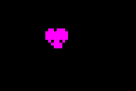

| Routines |
| Prev: 8B52 | Up: Map | Next: 8BA5 |
|
Used by the routines at Handler_ThePip, Handler_PlayerShot, Handler_SmallExplosion, Handler_PlayerShotLaunch and TickThenExplode.
Position an alien or pickup sprite and draw it through MaskSprite.
|
||||||||
| DrawObjectSprite | 8B73 | CALL ReloadMaskCache | Call ReloadMaskCache. | |||||
| 8B76 | EXX | Switch to the shadow registers. | ||||||
| 8B77 | CALL PositionMaskSprite | Call PositionMaskSprite. | ||||||
| 8B7A | EXX | Switch back to the normal registers. | ||||||
|
Compare the cached Y position with the actor Y.
|
||||||||
| 8B7B | LD A,($5E56) | Subtract the actor Y from SpriteCachedY. | ||||||
| 8B7E | SUB (IX+$04) | |||||||
| 8B81 | JP Z,MaskSprite_TestRemaining | Jump to MaskSprite_TestRemaining if they match. | ||||||
| 8B84 | JP M,DrawObjectSprite_ClipHeight | Jump to DrawObjectSprite_ClipHeight if the actor is below the cached position. | ||||||
| 8B87 | LD C,A | Store the Y difference in the row counter. | ||||||
| 8B88 | LD A,($5E5A) | Jump to MaskSprite_TestRemaining if the Y difference is greater than SpriteCachedRows. | ||||||
| 8B8B | CP C | |||||||
| 8B8C | JP C,MaskSprite_TestRemaining | |||||||
| 8B8F | SUB C | Subtract it from SpriteCachedRows and jump to MaskSprite. | ||||||
| 8B90 | LD ($5E5A),A | |||||||
| 8B93 | JP MaskSprite | |||||||
| DrawObjectSprite_ClipHeight | 8B96 | EXX | Switch register sets and negate the Y difference. | |||||
| 8B97 | NEG | |||||||
| 8B99 | LD C,A | |||||||
| 8B9A | LD A,($5E59) | Jump to MaskSprite_FinishSprite if the Y difference is greater than SpriteRowsLeft. | ||||||
| 8B9D | CP C | |||||||
| 8B9E | JP C,MaskSprite_FinishSprite | |||||||
| 8BA1 | SUB C | Subtract it from the row count and jump to MaskSprite_StoreRowCount. | ||||||
| 8BA2 | JP MaskSprite_StoreRowCount | |||||||
| Prev: 8B52 | Up: Map | Next: 8BA5 |
